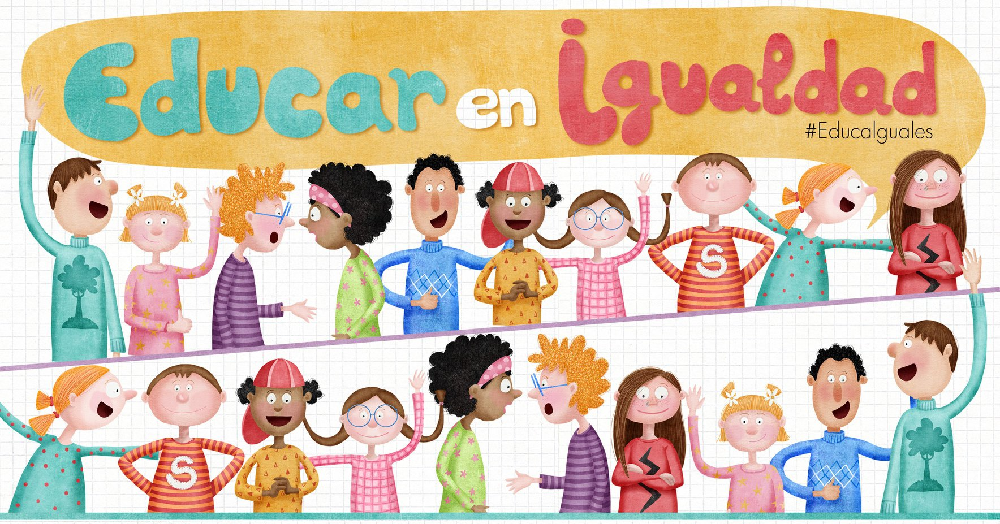

CONCLUSIONES
Resumen de lo aprendido
Para concluir este tema, sobre la importancia de este ODS #4, lo principal es buscar la educación inclusiva,
equitativa y de calidad para todos los niños, niñas y adolescentes de todo el mundo, la educación tendría que ser
un derecho básico para todos sin importar género, religión, raza, estrato etc.

Tambien hablar de que esto debemos de aplicar a nuestra universidad, para poder mejorar en nuestra educacion,
todas las universidades son buenas, pero siempre se puede mejorar y lograr una educacion casi perfecta.
Las universidades tienen que lograr que todos los alumnos tenga fácil acceso a la universidad, ya que muchas personas no
tienen la posibilidad de pagar las matrículas que muchas veces son caras, y si llegamos a más personas más rápido vamos a
obtener el logro que tenemos, pero esto solo se logra si trabajamos todos juntos.
Video de retroalimentacion
pagina web 1
pagina web 2
pagina web 3